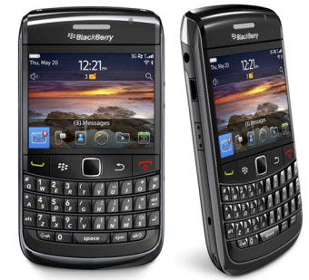
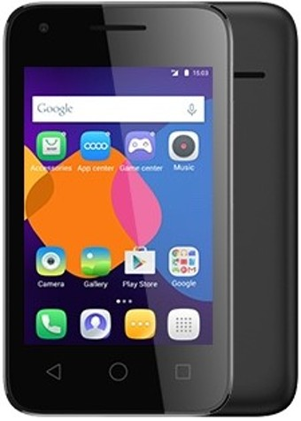
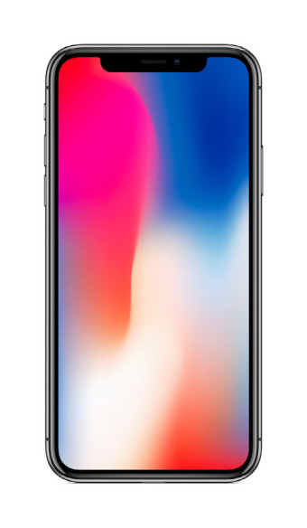
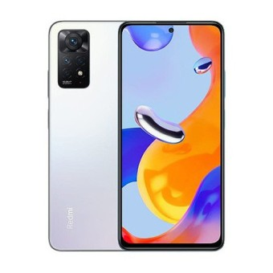
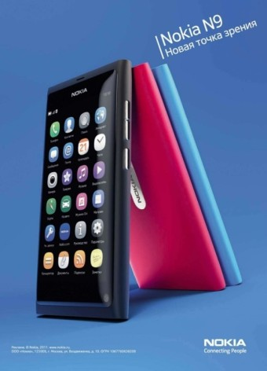

역사
최초의 스마트폰은 사이먼(Symon)으로 추정된다. IBM사가 1992년에 설계하여 그 해에 미국 네바다 주의 라스베이거스에서 열린 컴댁스에서 컨셉 제품으로 전시되었다.
스마트폰은 컴퓨터를 결합한 무선 휴대전화기이다. PC에서 실행되는 운영체제보다 작게 만든 모바일 운영체제를 탑재하여 인터넷 검색, 전자우편, 간단한 문서 편집, 카메라, 오디오 및 비디오 재생 등 PC의 기능을 거의 모두 갖추고 있다.
최초의 스마트폰은 사이먼(Symon)으로 추정된다. IBM사가 1992년에 설계하여 그 해에 미국 네바다 주의 라스베이거스에서 열린 컴댁스에서 컨셉 제품으로 전시되었다.
안드로이드(영어: Android)는 스마트폰, 태블릿 PC 같은 터치스크린 모바일 장치 용으로 디자인된 운영 체제이자 수정된 리눅스 커널 버전을 비롯한 오픈 소스 소프트웨어에 기반을 둔 모바일 운영 체제다. 또한, 운영 체제와 미들웨어, 사용자 인터페이스 그리고 표준 응용 프로그램(웹 브라우저, 이메일 클라이언트, 단문 메시지 서비스(SMS), 멀티미디어 메시지 서비스(MMS) 등을 포함하고 있는 소프트웨어 스택이자 모바일 운영 체제이다.
아이폰(영어: iPhone)은 미국의 기업 애플이 디자인하고 마케팅한 터치스크린 기반 휴대 전화 계열이다. 애플의 iOS 모바일 운영 체제를 사용한다. 1세대 아이폰은 애플의 공동 창립자 스티브 잡스가 2007년 1월 9일 발표하였고 2007년 6월 29일 처음으로 출시되었다. 그 뒤로 애플은 해마다 새로운 아이폰 모델과 iOS 업데이트를 출시해왔다. 2018년 11월 1일 기준으로 22억대 이상의 아이폰이 판매되었다.
|  |  |  |  |  |